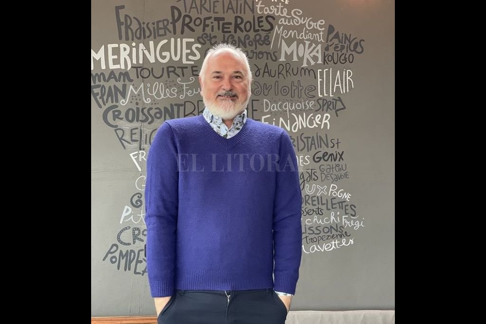

Cuando empezó a circular entre los lectores, hace 21 años, “La pastelería sin secretos” se convirtió en un texto mítico. Es que el reconocido chef patissier Osvaldo Gross había sido capaz de condensar allí un grupo de recetas que ya eran legendarias entre seguidores y alumnos de distintas latitudes. Este “clásico” de la literatura gastronómica contenía en sus páginas una mezcla perfecta para los amantes de la cocina: técnica precisa y pasión por el oficio. Ahora, Gross presentó una nueva edición corregida, revisada, aumentada y hasta ilustrada. Con esa excusa, el pastelero nacido en Esperanza, en una familia de orígenes austríacos y piamonteses, concedió una extensa entrevista a este medio, que arrancó con el libro, siguió por las nuevas modas de la gastronomía y terminó con sus recuerdos de infancia, la evocación de Cristina Buchara (la cocinera que marcó una era en la televisión santafesina) y sus preferencias al momento de preparar comida.
Bagaje didáctico
-¿Por qué considerás que “La pastelería sin secretos” se convirtió en un clásico de la literatura gastronómica y que te llevó a reeditar el libro dos décadas después?
-El libro nació con los programas de la vieja Utilísima, donde en un momento tuve un programa diario. Fue la primera vez que pude transmitir todas esas recetas, algunas de las cuales estaban de moda y otras por ser descubiertas. Y todo ese trabajo de años y de programas lo volqué en ese libro. Porque cuando empecé a dar clases, me remarcaban que era muy didáctico. Algo que vino por añadidura, porque yo he dado muchos años clases de Química inorgánica. Y es difícil comprender esa materia tan compleja. Entonces, cuando entré en la pastelería, la empecé a explicar con ese razonamiento. De ahí viene el título “sin secretos”, de todo ese bagaje didáctico. Se editó, duró un año y medio y no lo editaron más. Quedó como un mito, la gente que lo tenía lo cuidaba mucho. Siempre quise reeditarlo y pensamos en los 20 años. Eso fue en 2020 y estamos en 2021, así que serían 21 años del libro.
-Es interesante ese punto que mencionás sobre cómo inciden tus conocimientos de química en tu trabajo como pastelero. Transmitir que nada se hace a ojo, que detrás hay un razonamiento muy preciso.
-Cuando abracé la pastelería la abracé de esa manera. Pensé: “Si voy a cambiar mi profesión por algo, tiene que ser otra profesión”. Actualmente lo es, pero en ese momento estaba ahí, entre oficio y algo más. Entonces las explicaciones fueron por ese carril. Creo que eso fue lo que permitió que yo siguiera en la televisión dando clases y que diera clases por todos lados. La forma de transmitir. Siempre digo: “no sé si cocino rico, pero puedo explicar bien”.
-Eso es un valor. Hay que saber cómo transmitir todo lo que hay detrás de ese producto final.
-Era una época donde la gente no preguntaba por los errores. Lo hacía una vez y si no le salía cambiaba de receta. En cambio, ahora pregunta. Se animó más a eso. Por otro lado, aprendí acá y después en Francia, entonces había pequeños detalles que de pronto se fueron incorporando. Y te diría que hoy por hoy muchas de las escuelas de cocina del país y muchas de Latinoamérica sacan cosas de mi libro “El ABC de la pastelería”, que es como la Biblia de las masas, los rellenos y las cremas.
Sociabilizar
-Se percibe un interés renovado por la cocina en los últimos tiempos que viene acompañado por una mayor profesionalización. ¿Cómo lo ves?
-Pasan varias cosas. Por un lado, la gente volvió a cocinar en la casa, algo que se había perdido un poco porque nadie tenía tiempo. Hablo de la pre pandemia. No había mucho tiempo, pero tampoco había mucho dinero. Entonces la gente empezó a reunirse y se dio cuenta de que estaba bueno invitar a comer y no con la comida lista, sino para cocinar. El acto de cocinar se convirtió en un acto de sociabilizar. No hablo solamente del asado, sino de cualquier comida, hasta una pasta rellena. Cuando llegó la pandemia, cuando tuvimos que estar más adentro, ahí la gente se volcó a la cocina porque había tiempo. Entonces se empezaron a probar cosas nuevas. Por otro lado, antes los restaurantes tenían unas cartas larguísimas, podías leer sesenta platos. Y obviamente que no todo sale bien. Entonces los restaurantes fueron virando hacia casas más chicas, por ahí con treinta cubiertos. Y tienen un menú con cinco entradas y cinco platos. Entonces, hay mucho campo para poder trabajar. Por eso hay chefs que se dedican a cosas muy puntuales. Antes había que saber hacer de todo. Con la pastelería pasa lo mismo. Hoy no existe la responsabilidad de tener un local que sepa hacer todo. Podés hacer mini gateaux y dos o tres panes y tener tu emprendimiento.
-A lo cual se suma un consumidor atento a todo eso, que busca al que hace el producto más rico.
-Sin duda. El cliente aprendió a ir al mercado, elegir. Sabe, por ejemplo, que en mayo no va a conseguir espárragos. Que son más ricas las frutillas de noviembre. Se fue educando. No sé si la televisión tuvo que ver, yo creo que sí. Fueron apareciendo, a su vez, muchas opciones para tener una vida más saludable, aunque la pastelería no ayuda mucho. De todas maneras, es una indulgencia.
Herencia de sabores
-¿Cómo podrías definir el influjo de tu tierra natal de Esperanza en tu trabajo? ¿Qué tienen estas tierras santafesinas para rescatar en términos gastronómicos?
-Profesionalmente reconozco poca influencia. No obstante, tuvo que haber habido. Cuando nací, en 1961, Esperanza era una ciudad más chica. Puede que haya habido uno o dos restaurantes, mi familia no los frecuentaba. Pero los sábados y los domingos mis padres se reunían con otros matrimonios y preparaban comida. Recuerdo que mi mamá hacía una pavita al horno para Pascuas y su amiga hacía el relleno. O si otra amiga con su esposo hacían la pasta, mi mamá y mi papá hacían la salsa bolognesa. Eso lo viví. Al mismo tiempo, mis padres formaban parte de la comisión del colegio y muchos beneficios eran con comidas. Buseca o canelones. Todo eso lo incorporé. Además, mis tías vivían en Santa Fe y hacían bombones. En una época donde ni en televisión veías alguien que hiciera bombones. Me acuerdo que compraban las capsulitas, las rellenaban, las bañaban con chocolate. Era una cosa que me llamaba mucho la atención. Siempre estuvo la comida de esa forma. Después, lo que encaré fue a partir de lo que estudié en escuelas de cocina, en Buenos Aires y en París. Recién después, cuando uno empieza a madurar, rescata todas esas cosas. En los primeros años, sentía que no estaba a la altura para hacer una torta alemana, después me di cuenta que sí. Creo que es la evolución normal del ser humano, cuando uno es joven quiere romper todo y después empieza a volver a los orígenes. Hoy pasa mucho eso, están de moda de nuevo las facturas y los pan dulces. La idea de la herencia la vi reflejada años después de empezar a trabajar.
Tendencias
-Imagino hoy es necesario estar muy atento a los cambios que aparecen en el gusto de la gente.
-Hace diez años, en Argentina, casi nadie hablaba de un pan de masa madre. Hoy por hoy todo mundo quiere hacerlo y lo puede hacer. Hay modas. Hace veinte años eran los muffins. Después fueron los cupcakes. Más tarde los macarons, que todavía están en algunos lugares. Ahora es el turno de las masas laminadas. Eso está de moda en el mundo y acá también.
La pionera
Al hurgar en sus recuerdos, Gross reconoce la influencia de Cristina Buchara, una de las primeras en llevar la cocina a los medios santafesinos, a través de sus participaciones en programas como “Ustedes y nosotros”, “Hola Show” y “Entre mate y mate”. “Todavía tengo sus recetas guardadas en un cuaderno que era de mi mamá”, recuerda.